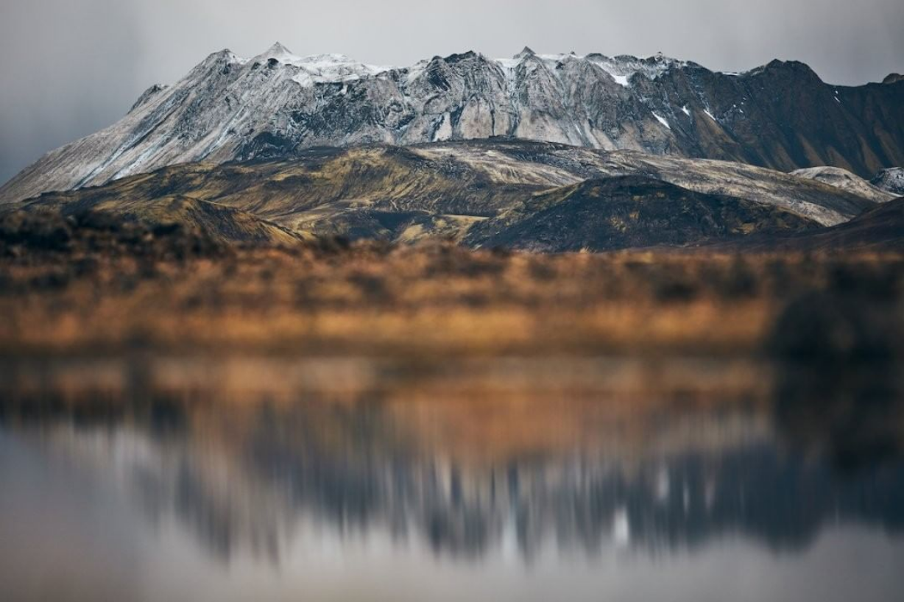

1,234 likes
natgeotravel
Photo by Matt Borowick @mborowick Driving into the Fjallabak Nature Reserve in the Icelandic highlands is an
adventure in itself. As you pass huge mountains in every direction with an abundance of colorful terrain, it
kind of feels like you’re driving through a painting of a distant planet. Löðmundur is a mountain peak that
resembles a crown and stands just under 5,000 feet (1,500 meters). Follow @mborowick for more pictures like
this. #iceland #mountains #adventure #nature #explore
View All 123 comments
barunxpradhan
@ashnamandhar
6 hours ago